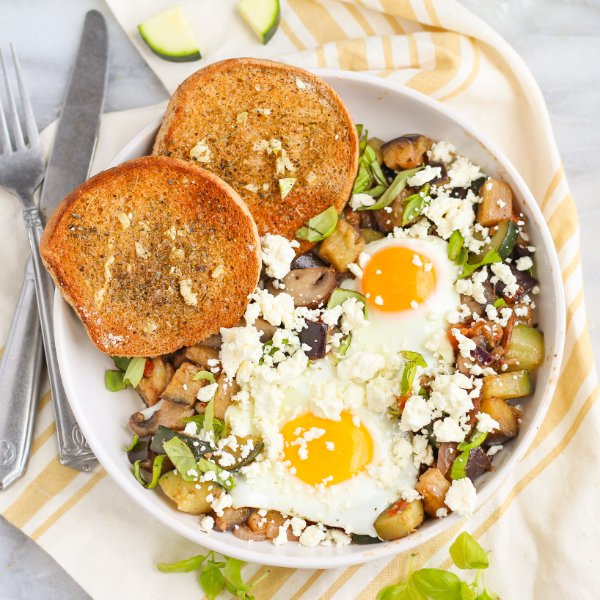

Baked Eggs with Eggplant-Basil Ratatouille, Feta & Garlic Toast

Nutrition (per serving)
632.6 kcalCalories
32.8 gProtein
51.6 gCarbs
35.6 gFat
Full nutrition table
| Calories | 632.6 kcal |
| Total fat | 35.6 g |
| Saturated fat | 13.5 g |
| Trans fat | 1 g |
| Cholesterol | 377.7 mg |
| Sodium | 872.6 mg |
| Carbohydrates | 51.6 g |
| Fiber | 16 g |
| Sugars | 20.9 g |
| Protein | 32.8 g |
| Potassium | 1900.7 mg |
| Calcium | 468.1 mg |
| Iron | 5.4 mg |
| Vitamin A | 1492.2 IU |
| Vitamin C | 36.6 mg |
| Vitamin D | 84.6 IU |
Cookware
Ingredients
- 1 lbcremini mushrooms
- 2 (4 oz) pkgscrumbled feta cheese
- 8eggs
- 2eggplants
- 1 small pkgfresh basil
- 4 clovesgarlic
- 1 mediumred onion
- 2tomatoes
- 4whole grain buns or rolls
- 2 mediumzucchini squash
- black pepper
- extra virgin olive oil
- Italian seasoning
- salt
Steps
- Wash and dry the fresh produce.2 eggplants
2 medium zucchini squash
1 lb cremini mushrooms
2 tomatoes
1 small pkg fresh basil - Trim and medium dice eggplants and zucchini; place both in a medium bowl.
- Thinly slice mushrooms. Roughly chop tomatoes; add both to the bowl with the eggplant and zucchini.
- Preheat a large skillet over medium-high heat.
- While the skillet heats up, peel, halve, and thinly slice onion lengthwise into strips. Peel and mince garlic.1 medium red onion
2 cloves garlic - Once the skillet is hot, add oil and swirl to coat the bottom. Add onion and garlic; cook, stirring often, until softened, about 3 minutes.3 tbsp extra virgin olive oil
- Add veggies and spices to the skillet; reduce heat to medium and cover. Cook, stirring halfway through, until softened, about 10 minutes.2 tsp Italian seasoning
1 tsp salt
½ tsp black pepper - Meanwhile, preheat oven to broil on high and position rack under the broiler.
- Pick basil leaves off the stems, roll up crosswise, and thinly slice into ribbons; set aside.
- Peel and mince additional garlic.2 cloves garlic
- Split rolls in half and place on a large baking sheet pan, cut-side up. Drizzle with oil and sprinkle with garlic and spices. Place in the oven and broil until toasted, 1-2 minutes; remove from oven.4 whole grain buns or rolls
2 tsp extra virgin olive oil
¼ tsp Italian seasoning
⅛ tsp salt
⅛ tsp black pepper - When the veggies are ready, stir basil into the ratatouille (reserving a small handful for garnish).
- Using a stirring spoon, make a well for each egg in the ratatouille; crack an egg into each well. Cook until the egg whites are almost cooked through, 2-3 minutes. Cover skillet with a lid and cook for 1 minute more.8 eggs
- Divide ratatouille and eggs between plates or bowls; top with feta and reserved basil. Serve with garlic toast on the side and enjoy!2 (4 oz) pkgs crumbled feta cheese